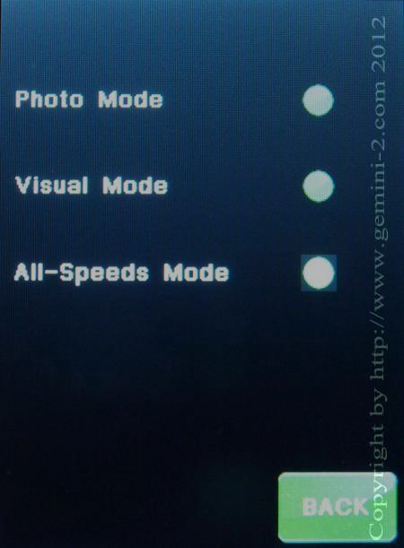

|
Gemini-2 and Gemini-1 Telescope Mount Controllers Website and Tutorials |
| Interactive Hand-Controller Menus - click on green button to Navigate |
|  |
This menu lets you select the speed that the buttons on the back (tactile) work in.
These buttons works in one of three modes: the Visual Mode, the Photo Mode and
the All Speeds Mode. You can move both axes simultaneously in all 3 modes. You select the mode by use of this menu. Like some other settings, it is remembered permanently and will be in effect even after powering off and on again. The Visual Mode - In visual mode, the Guiding Speed is not available. When you press a button, the telescope moves at Centering Speed. Momentarily pushing the opposite button (tactile buttons only) lets the system accelerate to the manual slewing speed. If you are moving both axes, both will speed up. Ramping up and down in speed occurs independently for both axes. This mode is intended for visual observing and for looking up objects. The auto-guider port is not active in this mode. The Photo Mode - In Photo Mode, Guiding Speed is the principal speed, so pressing a Hand Controller directional button moves the telescope at the selected Guiding Speed; Slewing Speed is not available. Acceleration to Centering Speed is available in four stages (to allow easy centering of an object in the field of view or on a CCD chip) by pressing the opposite tactile button while Gemini is guiding: Pressing the opposite button once changes to 1/8 of Centering Speed to allow fine centering of the target. |
|
Then, after about 2 seconds, the speed will increase to ¼ Centering
Speed, after another 2 seconds to ½ Centering Speed, and finally to full
Centering Speed.
Pressing the opposite button twice changes to full Centering Speed immediately.
If you want to guide a photograph manually, you may plug a Standard (not Deluxe) Hand
Controller into Gemini’s auto-guider port. This way you are sure that you cannot
accidentally move the scope at centering speed while guiding. The LED on the standard
Hand Controller will not be illuminated when plugged into the
auto-guider port.
The All Speeds Mode In this mode, all speeds are available, from Guiding Speed to Slewing Speed, by using the opposite-button trick. You can use this mode, for example, while drift aligning, when you need very fine centering of a star at the crosshairs and a fast move from the meridian to the eastern or western horizon. However, for normal observing, you'll probably select either the Visual or Photo Mode. |